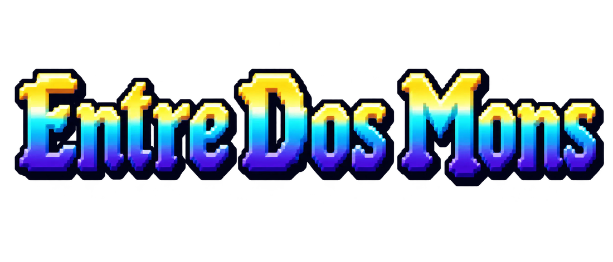
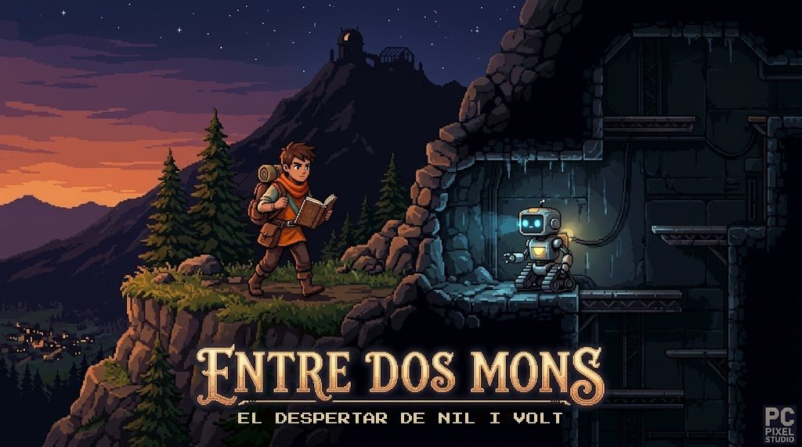
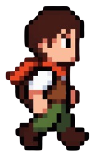
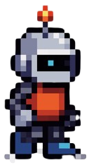
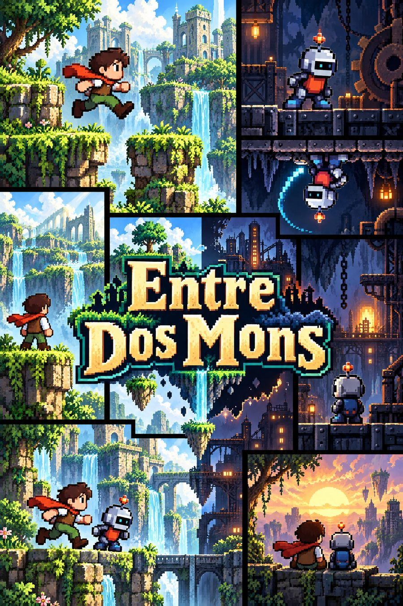

El bosque de Nil
Cuerdas, péndulos y plataformas sobre el río. Salta, balancéate y usa el entorno para abrir camino.
- Cuerdas
- Péndulos
- Agua

Dos héroes. Dos mundos.
Una sola tecla.
Un explorador en el bosque. Un robot perdido en las cuevas. Lo que hace uno abre el camino al otro. Cambia entre los dos al instante y devuelve la luz al valle.
Una vieja estación de investigación escondida bajo la montaña ha dejado de funcionar y, desde entonces, el pueblo del valle vive sin luz.
Nil, un joven explorador, sube a la montaña con el cuaderno de su padre para descubrir qué ha pasado. Muy cerca, bajo tierra, Volt, un pequeño robot de mantenimiento, despierta en la oscuridad con la batería casi vacía.
Avanzan por separado, pero no están solos: cada puzle se resuelve entre los dos, hasta que por fin se encuentran en el núcleo de la estación.
«Si el río no deja de entrar en la cueva, Volt no llegará al generador. Y sin el generador, Nil nunca subirá a la cima.»

En el juego pulsas Q para pasar de Nil a Volt. Aquí también: pruébalo.
Cuerdas, péndulos y plataformas sobre el río. Salta, balancéate y usa el entorno para abrir camino.
Oscuridad total. Tu linterna es tu vida y gasta batería. Las botas magnéticas te dejan caminar por el techo.
Ahora controlas a Nil
Nil tira un tronco al río y el agua deja de inundar la cueva de Volt.
Volt reactiva un generador y fuera se enciende el ascensor que Nil necesita.
La luz es un recurso: encuentra cargadores antes de que la batería llegue a cero.
Dos formas de moverse, dos maneras de pensar cada puzle.

Curioso, valiente y un poco cabezota. Sigue las notas del cuaderno de su padre para descubrir qué apagó el valle.

Pequeño, metódico y con la batería en las últimas. Conoce la estación mejor que nadie, aunque no recuerda por qué se apagó.
Una tecla y pasas de un personaje a otro, sin cargas ni esperas.
Camina por el techo con Volt y mira cada sala desde otro ángulo.
Cuerdas, péndulos, agua y cajas que reaccionan como esperas.
Gestiona la batería de la linterna: sin luz, las cuevas no perdonan.
Bosques al atardecer y cuevas industriales dibujados píxel a píxel.
Difícil pero justo. Aquí el rival es el entorno, no los enemigos.
Imágenes del juego en desarrollo con Unity 6. Pulsa cualquiera para verla en grande.

Descarga Entre Dos Mons en itch.io, deja tu comentario y síguenos en Instagram para ver cada nuevo nivel, personaje y secreto antes que nadie.
Juego en desarrollo activo. Tu feedback nos ayuda a mejorarlo.